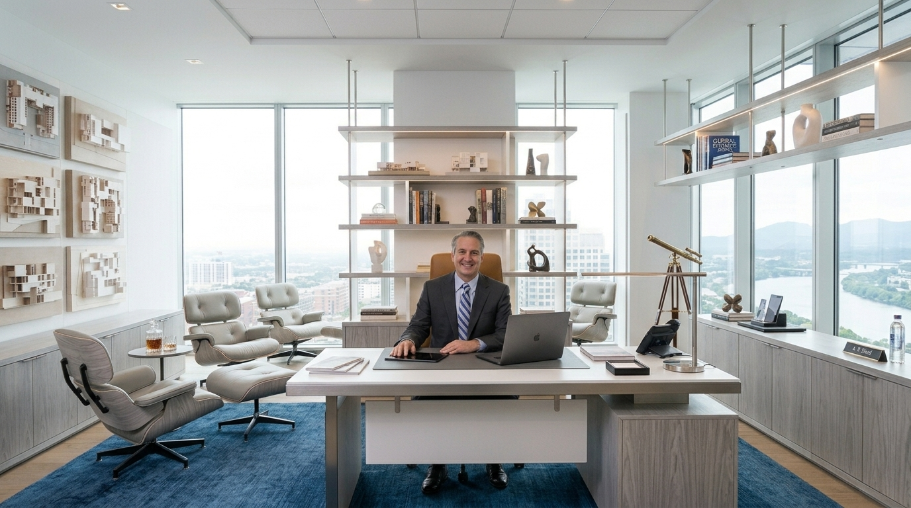
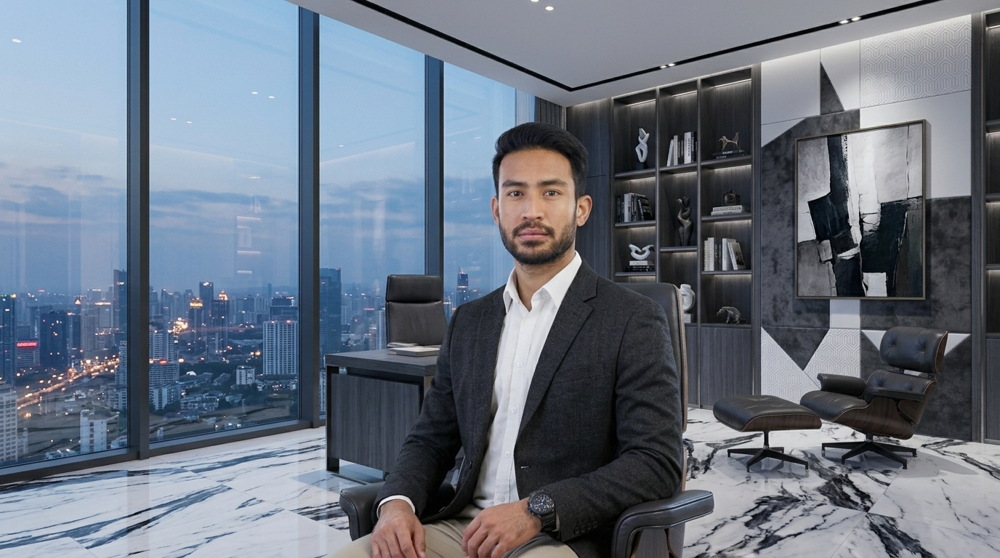

THE RUBIK RECEIVES CIFA COMMENDATION FOR CAPE TOWN INNOVATION
At the prestigious Cape Institute of Architecture Awards, our landmark mixed-use commercial and residential tower was recognized for exceptional structural form and urban integration.
Delivered for Abland Property Developers, The Rubik introduces a dynamic, sculptural language to Cape Town’s urban fabric. The design breaks away from conventional monolithic extrusion by stacking shifted geometric volumes, creating cascading private terraces and optimizing natural light penetration deep into interior living zones.
This commendation underscores our commitment to pushing the envelope of high-rise commercial and residential integration, ensuring urban densification never compromises architectural integrity or human-scale experience.

LONGKLOOF PRECINCT WINS CIFA AWARD FOR URBAN REGENERATION
Breathing new life into historic industrial fabric, the Longkloof Precinct project for Growthpoint Properties sets a new benchmark for heritage adaptive reuse.
Located in the heart of Cape Town, Longkloof marries historic 20th-century brickwork with ultra-modern structural steel and glass insertions. Our masterplan prioritizes pedestrian permeability, open-air courtyards, and tactile material honesty.
By preserving the structural bones of the original industrial buildings while upgrading them to elite digital and environmental standards, we've established a thriving corporate and social ecosystem.
DESIGNING FOR CONTEXT, NOT PINTEREST: THE VALUE OF AUTHENTICITY
Examining how trend-led design has become a default benchmark of superficial success and why deep contextual grounding yields greater longevity.
In an algorithm-driven design landscape, algorithmic repetition often overrides genuine site response. True architectural value emerges when a building is inseparable from its geography, climate, and cultural history.
When we design for context rather than transient social media aesthetics, spaces naturally acquire enduring character and anchor their occupants deeply into place.

DIGITAL DELIVERY GIVES CONSTRUCTION A NEW COMPETITIVE ADVANTAGE
How our advanced Building Information Modelling (BIM) teams keep our practice at the forefront of digital delivery.
Complexity in modern architecture requires absolute coordination between design vision and structural reality. Our specialized BIM infrastructure eliminates friction points long before construction begins on site.

COLLABORATION & CRAFT: REIMAGINING NOBU CAPE TOWN
Our collaboration with Rockwell Group on the world-renowned Nobu at the One&Only Waterfront.
Hospitality design thrives when international vision aligns seamlessly with local execution. Serving as architect of record alongside international design partners, our team ensured indigenous craft was woven into the space.

BEYOND BORDERS: THE GLOBAL EXPANSION OF SA DESIGN
Unpacking how a studio rooted in African soil has grown into an internationally recognized brand.
South African architecture possesses a unique resourcefulness and climatic intelligence. Taking this perspective to international markets has allowed our practice to influence urban developments across continents.

DESIGNING FOR AN EVOLVING CAPE TOWN CENTRAL BUSINESS DISTRICT
Reflections on how inner-city living, mixed-use zoning, and pedestrian dynamics have transformed the Cape Town CBD over the past decade.
The modern CBD is no longer just a 9-to-5 corporate hub; it is a vibrant, round-the-clock vertical community. Designing for this transition requires deep focus on public realm activation, ground-floor permeability, and adaptive residential conversions.

BUILT FOR THE LONG GAME: FOUNDATIONAL PRINCIPLES OF OUR PRACTICE
A reflection on studio continuity, why design rigor matters, and how a long-term view of the future guides our creative decisions.
Architecture is an exercise in legacy. Buildings outlive their creators, their clients, and often economic cycles. By fostering leadership continuity, rigorous peer review, and mentorship, we ensure every structure stands as a timeless contribution.